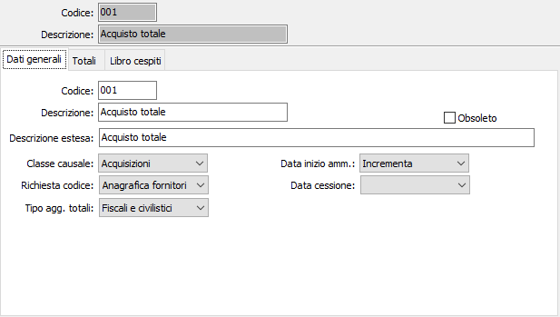
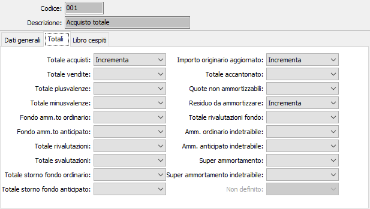
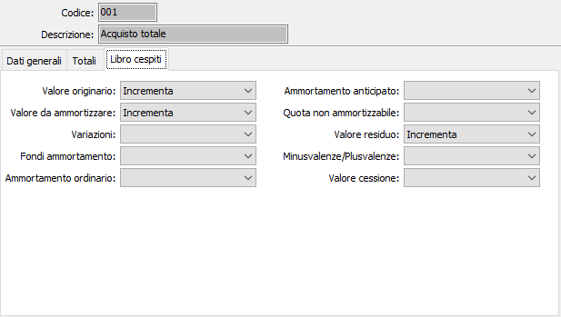

Causali cespiti
La tabella consente la creazione e la manutenzione delle causali cespiti, che governano l’azione di ciascuna causale ai fini dell’aggiornamento dei progressivi dei cespiti. Le causali cespiti vengono utilizzate per l’inserimento dei movimenti cespiti.
La finestra video del programma prevede tre linguette: la prima contiene i parametri della causale; la seconda governa l’azione del movimento generato dalla causale sui progressivi del cespite in esame; la terza governa l’azione del movimento sul libro cespiti.
Dati generali

CODICE: codice alfanumerico di 3 caratteri che contraddistingue la causale in esame. Sul campo sono attive le funzioni di ricerca (F9) sulla tabella stessa.
DESCRIZIONE: campo alfanumerico di 30 caratteri per contenere la descrizione della causale in esame. Questa descrizione viene stampata sul libro cespiti e utilizzata da tutti i programmi della procedura.
DESCRIZIONE ESTESA: campo alfanumerico di 60 caratteri per contenere una eventuale descrizione estesa, ad uso dell’utente, della causale in esame. Questa descrizione viene solo visualizzata nelle funzioni di ricerca sulle causali all’atto dell’inserimento di movimenti cespiti.
CLASSE CAUSALE: combo box per indicare la classe di operazioni sui cespiti a cui appartiene la causale in esame. È ammesso uni dei valori contenuto nella lista; il valore Altro toglie i vincoli legati alla classe stessa, ad esempio se devo fare una causale per la rivalutazione di un cespite acquistato, ma non ancora ammortizzato; movimento che con la normale causale di rivalutazione non è consentita.
RICHIESTA CODICE: combo box per definire se il movimento governato dalla causale in esame deve richiedere obbligatoriamente un codice cliente o fornitore. Valori ammessi: Nessuna richiesta; Anagrafica clienti; Anagrafica fornitori.
DATA INIZIO AMMORTAMENTO: combo box per definire se la causale in esame deve aggiornare la data di inizio ammortamento del cespite attivo. Valori ammessi: Blank, Incrementa (per acquisto cespite), Decrementa (per storno acquisto cespite).
DATA CESSIONE: combo box per definire se la causale in esame deve aggiornare la data di cessione del cespite attivo. Valori ammessi: Blank, Incrementa (per cessione cespite), Decrementa (per storno cessione cespite).
TIPO AGGIORNAMENTO TOTALI: definisce se aggiornare i totali fiscali oppure i totali civilistici oppure entrambi.
Totali
La finestra video contiene 17 combo box attivi e 3 combo box inattivi per definire l’azione della causale in esame sul totalizzatore del cespite descritto in ciascuna etichetta di campo. L’utente deve indicare il tipo di azione, da scegliere fra Nullo, Incrementa, Decrementa, che la causale deve determinare relativamente a ciascun totalizzatore.

Libro cespiti
La finestra video contiene 10 combo box attivi corrispondenti alla colonne del libro cespiti, per definire l’azione della causale in esame sul libro cespiti
L’utente deve indicare il tipo di azione, da scegliere fra Nullo, Incrementa, Decrementa, e Cessione/Dismissione, che la causale deve effettuare sul libro cespiti, relativamente a ciascuna colonna il cui nome è indicato dall’etichetta del campo attivo.
